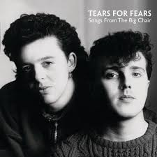
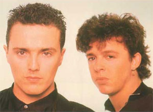
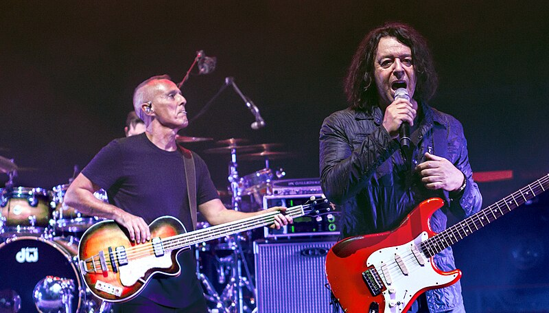

Boas-vindas a
 Quero conhecer!.png)
Quem são os Tears for Fears?
Tears for Fears é uma banda britânica de rock e new wave formada em 1981 por Roland Orzabal (voz e guitarra) e Curt Smith (voz e baixo). Fundada após a dissolução da primeira banda da dupla, Graduate, o Tears for Fears era inicialmente era inicialmente associado associado com as bandas de sintetizadores new wave do começo dos anos 1980 mas posteriormente o estilo se ramificou para o rock e o pop mainstream,que os levarampara as paradas de sucesso internacionais. A banda fez parte da Segunda Invasão Britânica nos Estados Unidos, dirigida pela MTV.
Galeria

